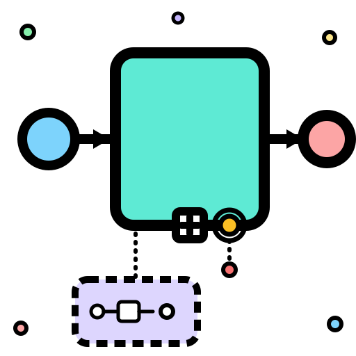
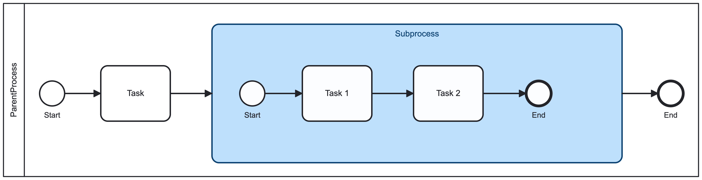
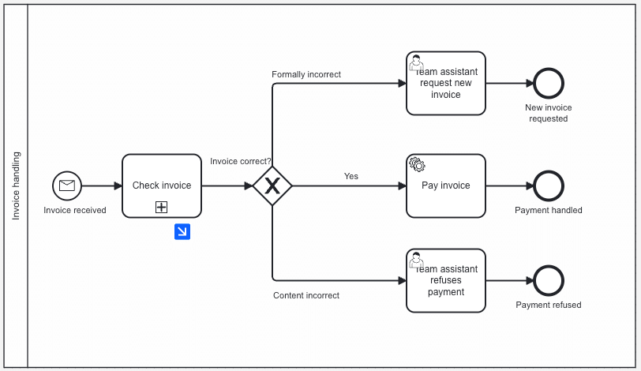
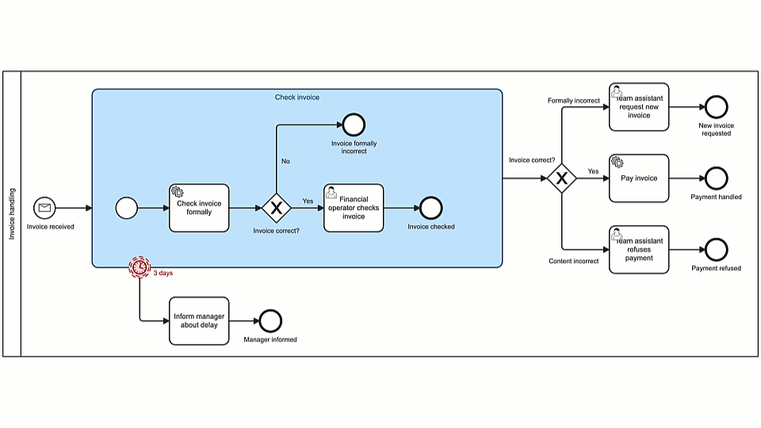
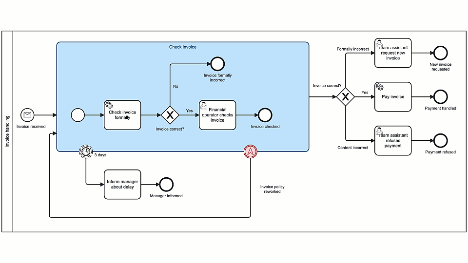
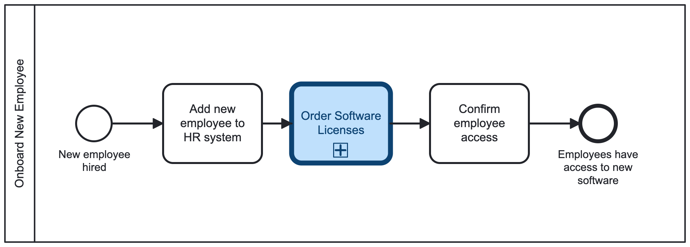
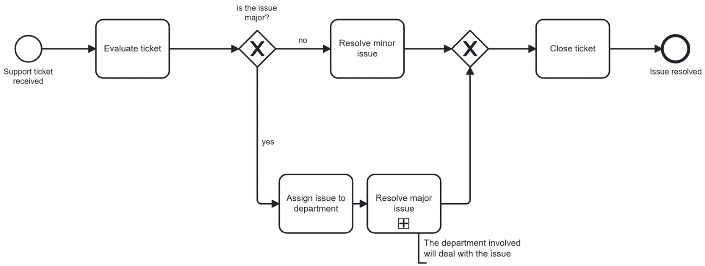
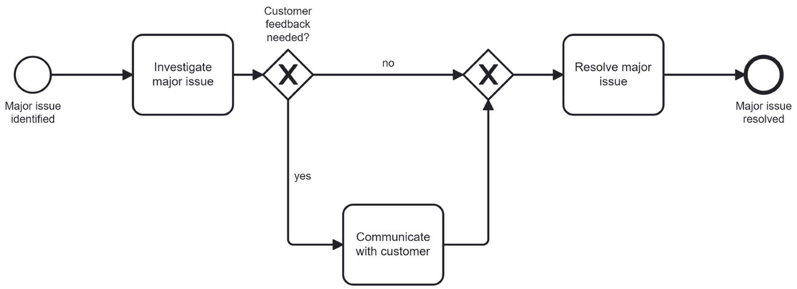
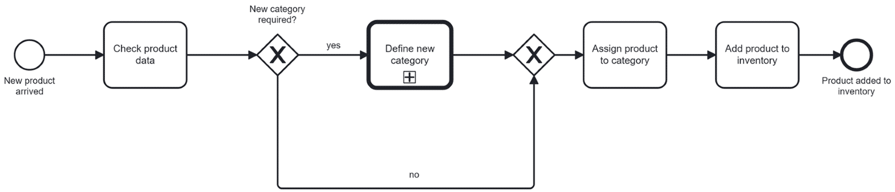
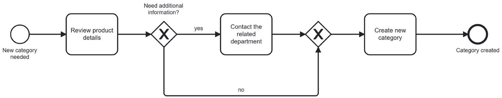

Vì sao cần subprocess?
Process chạy tốt lúc còn 6 bước. Đến khi có 22 bước, thêm vài nhánh exception do đồng nghiệp vẽ thêm, không ai còn thống nhất được đoạn nào bắt đầu, đoạn nào kết thúc. Subprocess giải quyết đúng vấn đề này: gom một nhóm bước liên quan vào một vùng riêng trong model, thay vì rải chúng khắp process cha.
Dùng subprocess giúp:
- Đơn giản hóa process cha - nhìn tổng thể gọn hơn nhiều.
- Tạo ranh giới rõ ràng cho một nhóm bước liên quan.
- Thể hiện rõ đoạn công việc đó bắt đầu và kết thúc ở đâu.
- Tạo ra một scope hữu ích để xử lý event xoay quanh nhóm công việc đó (xem phần boundary event bên dưới).
Một subprocess là một nhóm flow node (child process) nằm bên trong một process lớn hơn (parent process). Trên diagram, subprocess được vẽ như một hình chữ nhật bo góc, tương tự task.

Bài này tập trung vào hai loại subprocess: embedded subprocess và call activity.
Embedded subprocess là gì?
Một embedded subprocess gom các element của process cha vào một vùng riêng, nhưng vẫn nằm bên trong process đó - không tách thành process riêng biệt.
Dùng embedded subprocess khi logic đó chỉ thuộc về process cha và không cần tái sử dụng ở nơi khác. Vài đặc điểm cần nhớ:
- Nằm trong process cha: đây là một phần của process lớn hơn, không phải process độc lập.
- Bắt đầu khi flow chạy tới: subprocess kích hoạt khi token trong process cha đi vào vùng gom nhóm này.
- Kết thúc sau bước cuối cùng bên trong: subprocess hoàn tất khi element cuối cùng bên trong nó hoàn tất, rồi sequence flow đi ra được tiếp tục.
- Chỉ có đúng một none start event - không được dùng loại start event nào khác.
| Nên dùng | Nên tránh | |
|---|---|---|
| Điều kiện | Logic chỉ thuộc process này, các bước liên kết chặt với nhau | Cùng một nhóm logic cần dùng lại ở nhiều process khác nhau |
| Mục tiêu chính | Gom nhóm, làm gọn model | Tái sử dụng - đây là dấu hiệu nên chuyển sang call activity |
Collapsed và Expanded view
Collapsed và expanded chỉ là cách hiển thị subprocess trên diagram - không ảnh hưởng gì đến cách nó chạy.
Thu gọn subprocess lại thành một khối duy nhất (dấu +), ẩn logic bên trong. Dùng khi muốn diagram cha gọn, sạch, và chưa cần quan tâm chi tiết bên trong ngay lúc đó. Muốn xem logic bên trong, drill-down vào subprocess rồi quay lại process cha khi cần góc nhìn tổng thể.

Hiện toàn bộ các bước bên trong ngay trên diagram cha. Dùng khi logic bên trong quan trọng và người đọc cần thấy chuyện gì xảy ra bên trong subprocess mà không cần drill-down.
💡 Chuyển qua lại giữa hai view chỉ là thao tác hiển thị trên tool modeling - không phải thay đổi hành vi runtime. Đừng nhầm việc đổi view với việc sửa logic process.
Boundary event trên embedded subprocess
Một team đang điều tra major issue. Giữa chừng cần thêm thông tin gấp từ khách hàng - không muốn vẽ lại cả process, chỉ cần process phản ứng đúng với chuyện xảy ra ở "biên" của nhóm công việc đó. Đây là lúc boundary event phát huy tác dụng: subprocess cho công việc một scope rõ ràng, boundary event cho scope đó một đường phản ứng rõ ràng.
Boundary event gắn trên subprocess có hai loại: interrupting và non-interrupting. Khi interrupting boundary event kích hoạt, subprocess và toàn bộ instance đang tạo ra bị chấm dứt. Khi non-interrupting boundary event kích hoạt, instance đó không bị ảnh hưởng - vẫn tiếp tục chạy song song.
Ví dụ thực tế trên process "Check invoice" - bấm vào từng tab để so sánh:
Nhắc nhở sau 3 ngày: timer boundary event kích hoạt nếu subprocess "Check invoice" chưa hoàn tất trong 3 ngày, gửi thông báo cho manager - subprocess vẫn tiếp tục chạy bình thường song song.

Ngắt khi đổi policy: khi công ty đổi chính sách hóa đơn, interrupting boundary event hủy subprocess "Check invoice" đang chạy và restart lại từ đầu - các invoice đã check xong trước đó không bị ảnh hưởng.

Chỉ dùng boundary event khi giải thích được rõ ràng điều gì kích hoạt nhánh thay thế, và vì sao phản ứng đó nên đặt ở biên subprocess - nếu không giải thích được, đừng thêm boundary event chỉ vì "có thể cần".
Call activity là gì?
Một call activity (hay reusable subprocess) gọi và chạy một process khác như một phần của process hiện tại. Khác với embedded subprocess, process được gọi ở đây lưu trữ tách biệt (thành BPMN file riêng) và có thể được gọi bởi nhiều process khác nhau.
Khi call activity bắt đầu chạy, Camunda tạo một process instance mới cho process được tham chiếu. Điều này tách biệt rõ ràng process cha (gọi logic) và process con (chạy logic tái sử dụng được).

Trên diagram, call activity dùng chung ký hiệu dấu + như embedded subprocess collapsed, nhưng viền được vẽ đậm hơn để phân biệt hai loại.
💡 Lưu ý quan trọng: link call activity tới process khác chỉ thiết lập tham chiếu - việc deploy là hoàn toàn tách biệt. Deploy diagram cha không tự động deploy diagram được link.
Embedded subprocess vs Call activity
| Nếu cần... | Nên chọn |
|---|---|
| Gom logic bên trong một process | Embedded subprocess |
| Dùng lại cùng một logic ở nhiều process | Call activity |
| Hiện các bước bên trong ngay trên view process cha | Embedded subprocess |
| Quản lý logic được gọi như một process độc lập | Call activity |
Quy tắc quyết định gọn lại trong hai câu hỏi:
- Logic này có chỉ thuộc về process này không?
- Hay nó cần được dùng lại và quản lý tách biệt?
Chỉ thuộc process này → cân nhắc embedded subprocess. Cần dùng lại ở nơi khác → cân nhắc call activity. Bấm vào từng tình huống dưới đây để tự kiểm tra:
1
Support escalation chỉ tồn tại trong một service process
Chọn embedded subprocess. Logic này chỉ thuộc về đúng một process, không có tín hiệu nào cho thấy cần tái sử dụng liên-process.
2
Onboarding approval flow được HR, IT, và facilities cùng dùng
Chọn call activity. Được dùng lại ở nhiều process khác nhau là tín hiệu mạnh nhất cho call activity - embedded subprocess sẽ khiến logic này bị "khóa" vào một process cha duy nhất.
3
Muốn ẩn chi tiết, nhưng logic vẫn chỉ thuộc process này
Chọn embedded subprocess ở chế độ collapsed. Giữ logic trong cùng process, chỉ đơn giản hóa cách hiển thị. Đừng nhầm bài toán "hiển thị" với bài toán "tái sử dụng" - hai chuyện tách biệt.
💡 Quyết định theo đúng thứ tự: chốt reuse và scope trước, rồi mới chọn view giúp diagram dễ đọc nhất.
Thực hành: Ticket support process
Bài tập mô hình hóa process xử lý ticket hỗ trợ, gồm hai nhánh:
- Non-major issue: customer team tự xử lý và đóng ticket.
- Major issue: chuyển cho phòng ban liên quan (IT, finance...) điều tra kỹ trước khi đóng ticket.
Nhiệm vụ: mô hình hóa phần xử lý major issue thành một embedded subprocess - vì logic điều tra này chỉ thuộc về process ticket support, không cần tái sử dụng ở process khác. Bên trong subprocess "Resolve major issue": xác định major issue → điều tra → nếu cần, trao đổi thêm với khách hàng → xử lý xong → đóng ticket. Có thể để subprocess ở chế độ collapsed để process cha gọn hơn.
Process cha: đánh giá ticket, rẽ nhánh minor/major issue, rồi gộp lại trước khi đóng ticket. Nhánh major issue được gom vào subprocess "Resolve major issue" (dấu + - đang ở chế độ collapsed).

Bên trong subprocess "Resolve major issue": điều tra major issue, rẽ nhánh nếu cần trao đổi thêm với khách hàng, rồi resolve.

Thực hành: Inventory process
Một công ty bán lẻ cần logic tái sử dụng để định nghĩa category sản phẩm mới, vì nhiều process liên quan đến inventory khác nhau đều có thể cần tới logic này sau này.
- Cập nhật inventory tiêu chuẩn: sản phẩm mới về kho, nếu category đã tồn tại thì inventory team cập nhật số lượng ngay trong workflow hiện tại.
- Phân loại cho sản phẩm hoàn toàn mới: nếu category chưa tồn tại, một process phân loại riêng được kích hoạt - team chuyên trách review chi tiết sản phẩm, có thể phối hợp thêm với phòng ban khác trước khi tạo category mới.
- Tái sử dụng: process phân loại category này được thiết kế để nhiều workflow inventory khác nhau có thể gọi tới, chứ không chỉ riêng process này.
Vì logic phân loại category cần dùng lại ở nhiều process, đây là lúc chọn call activity thay vì embedded subprocess: tách "Define new category" thành một process riêng, rồi link call activity trong process cha tới nó.
Process cha: kiểm tra product data, nếu cần category mới thì gọi tới call activity "Define new category" (viền đậm - ký hiệu call activity), sau đó gán category và thêm vào inventory.

Process "Define new category" được lưu tách biệt: review chi tiết sản phẩm, liên hệ phòng ban liên quan nếu cần thêm thông tin, rồi tạo category mới. Process này có thể được nhiều workflow inventory khác gọi tới.

Tóm tắt
- Subprocess là một nhóm flow node (child process) nằm bên trong một process lớn hơn (parent process), giúp process cha rõ ràng và dễ bảo trì hơn.
- Embedded subprocess nằm bên trong process cha, không tái sử dụng được ở process khác, chỉ có đúng một none start event, và kế thừa thông tin từ process cha.
- Call activity lưu trữ tách biệt, tái sử dụng được ở nhiều process, tạo process instance riêng khi chạy, và phải được process cha gọi để nhận data.
- Collapsed/expanded chỉ là cách hiển thị - không đổi hành vi runtime.
- Boundary event gắn trên embedded subprocess giúp phản ứng với delay, error, hoặc exception mà không cần đưa logic đó vào main path; interrupting sẽ chấm dứt subprocess, non-interrupting thì không.
- Quy tắc chọn nhanh: chỉ thuộc process này → embedded subprocess; cần dùng lại ở process khác → call activity. Quyết định reuse/scope trước, chọn view sau.